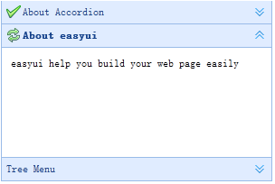

Override defaults with $.fn.accordion.defaults.
The accordion allows you to provide multiple panels and display one at a time. Each panel has built-in support for expanding and collapsing. Clicking on a panel header to expand or collapse that panel body. The panel content can be loaded via ajax by specifying a 'href' property. Users can define a panel to be selected. If it is not specified, then the first panel is taken by default.
Create accordion via markup, add 'easyui-accordion' class to <div/> markup.
We can change or recreate accordion later and modify some features.
Call 'getSelected' method to get the current panel and then we can call 'refresh' method of panel to load new content.
| Name | Type | Description | Default |
|---|---|---|---|
| width | number | The width of accordion container. | auto |
| height | number | The height of accordion container. | auto |
| fit | boolean | Set to true to set the accordion container size fit it's parent container. | false |
| border | boolean | Defines if to show the border. | true |
| animate | boolean | Defines if to show animation effect when expand or collapse panel. | true |
The accordion panel options is inhirited from panel, below is the addition properties:
| Name | Type | Description | Default |
|---|---|---|---|
| selected | boolean | Set to true to expand the panel. | false |
| Name | Parameters | Description |
|---|---|---|
| onSelect | title,index | Fires when a panel is selected. |
| onAdd | title,index | Fires when a new panel is added. |
| onBeforeRemove | title,index | Fires before a panel is removed, return false to cancel the remove action. |
| onRemove | title,index | Fires when a panel is removed. |
| Name | Parameter | Description |
|---|---|---|
| options | none | Return the options of accordion. |
| panels | none | Get all panels. |
| resize | none | Resize the accordion. |
| getSelected | none | Get the selected panel. |
| getPanel | which | Get the specified panel. The 'which' parameter can be the title or index of panel. |
| getPanelIndex | panel |
Get the specified panel index. This method is available since version 1.3.
The example below shows how to get the selected panel index. var p = $('#aa').accordion('getSelected');
if (p){
var index = $('#aa').accordion('getPanelIndex', p);
alert(index);
}
|
| select | which | Select the specified panel. The 'which' parameter can be the title or index of panel. |
| add | options |
Add a new panel. By default the added panel will become selected.
To add a unselected new panel, pass the 'selected' property and set it to false.
Code example: $('#aa').accordion('add', {
title: 'New Title',
content: 'New Content',
selected: false
});
|
| remove | which | Remove the specified panel. The 'which' parameter can be the title or index of panel. |